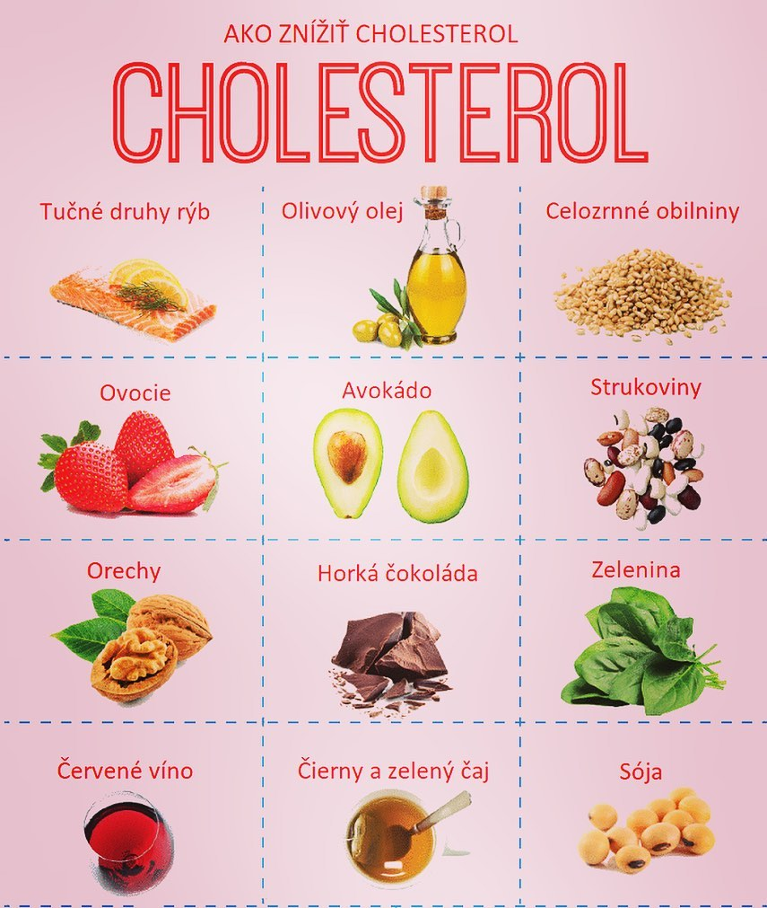

💡Cholesterol je pre naše telo nevyhnutný, problémom sa však stáva, ak sú jeho hodnoty v krvi vysoké. Vtedy môže spôsobovať ťažkosti – vznik aterosklerózy, vysokého tlaku a rozvoj srdcovo-cievnych ochorení.
🍪🍔Za vysoký cholesterol môže predovšetkým strava a zlé návyky, ktoré v stravovaní máme. Potom sú tu ešte prípady vrodenej predispozície, ktoré patria do samostatnej kategórie. Ak váš jedálniček tvoria prevažne múčne jedlá, vyprážané jedlá, množstvo príloh (ryža, zemiaky), konzumujete málo zeleniny a ovocia a máte sedavé zamestnanie mali by ste spozornieť – buď už trpíte zvýšeným cholesterolom, alebo sa u vás môže rozvinúť v budúcnosti.
⬇️Na znižovanie nežiadúcich zložiek cholesterolu majú vplyv viaceré potraviny, ktoré by strava pri zvýšenom cholesterole nemala obsahovať. Naopak, nasledovné potraviny je vhodné zaradiť do jedálnička:
✅Tučné druhy rýb (losos, makrela)
✅Olivový olej
✅Celozrnné obilniny
✅Ovocie a zeleninu
✅Strukoviny
✅Orechy
✅V miernom množsve horkú čokoládu a červené víno
✅Čierny a zelený čaj
Samozrejme netreba zabúdať na pravidelný pohyb na čerstvom vzduch.
#evalar#cholesterol#hdl#ldl#zdravetelo#zdravastrava#pohyb#zdravesrdce#krvnytlak#ryba#ovocie#zelenina#caj#citrusy#orechy#strukoviny#napad#akozdravozit#pohyb#sport#kondicia